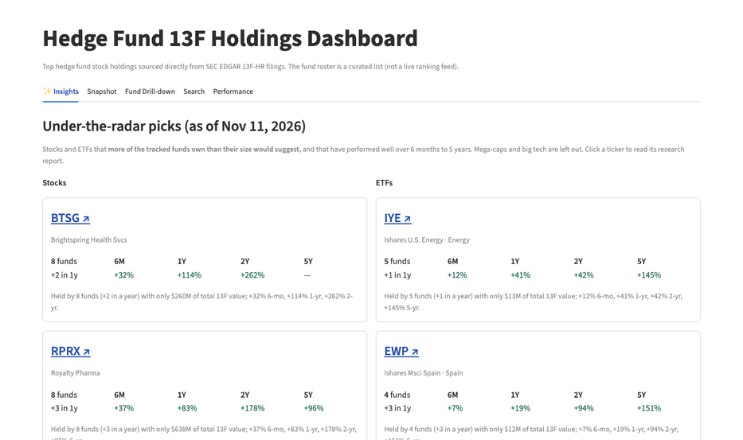
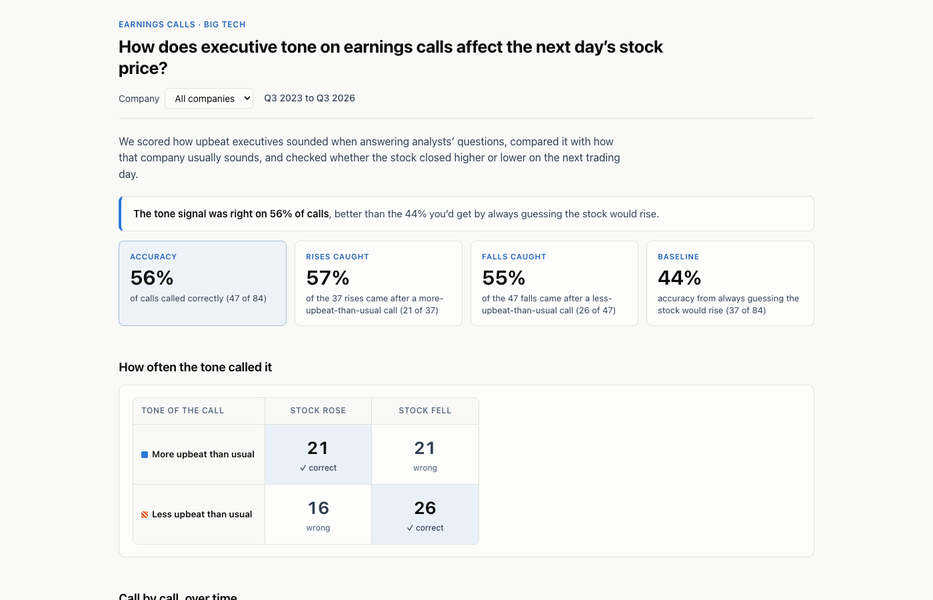
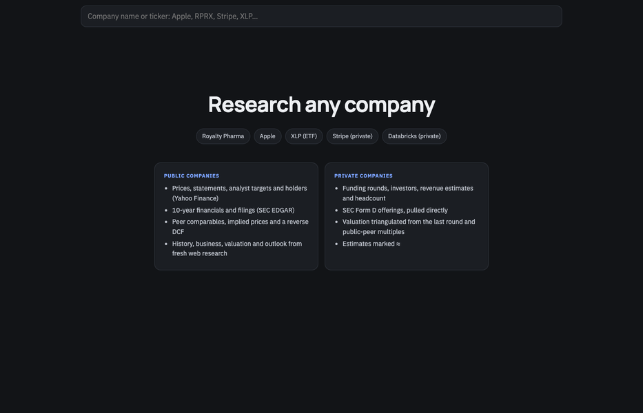
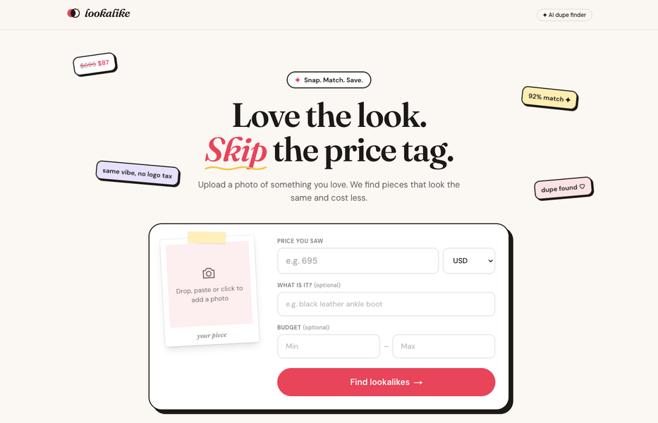

Side projects, mostly at the intersection of finance, data and LLMs.

📈 Finance · Data
What the big funds are buying
Tracks what about 20 well-known hedge funds are buying, using their quarterly 13F filings from SEC.
It ranks holdings a few different ways, shows a current-quarter snapshot and trends across the trailing year, and surfaces "under-the-radar" stocks and ETFs that more funds own than their size would suggest.

🎙️ Finance · NLP
Does an upbeat CEO move the stock?
Does executive tone on earnings calls predict the next day's stock move?
This dashboard scores how upbeat executives sound in the analyst Q&A for big tech companies, compares it with how each company usually sounds, and checks it against the next trading day's move.

🔎 Finance · AI
A research report for any company, on demand
Type a company name or ticker and get an interactive research report for any public company, ETF or private company.
Market data and filings render in seconds, valuation math is computed in code, and an LLM writes the story, business, valuation and outlook sections in parallel using live web research.

🛍️ Shopping · AI
Same look, smaller price
Upload a photo of something you love and the price you saw, and Lookalike finds pieces that look the same and cost less.
AI describes the item's color, material and shape, searches Google Shopping, then scores each cheaper result against your photo so only close matches make the cut.